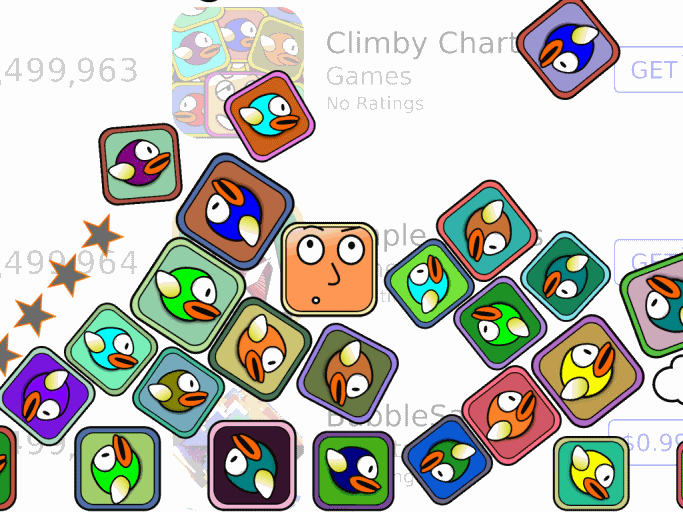

Climby Charts: Buried Alive in the App Heap

Inspired by my first two experiences with the app store, I created this humorous game about how hard it is for a developer to get noticed at all. You have to dodge Flappy Bird clones and one-star reviews on your futile quest to collect downloads and climb the charts.
Switching over to Unity for this project meant learning some of the differences between C# and C++. It also meant discovering ways to deal with the bloated excess that comes with using a 3D engine to develop a 2D game. ("No, Unity, Climby Charts does NOT need to be 100 MB!")
Try it out on iOS or on Android through Amazon. Or for more info, check out my blog.